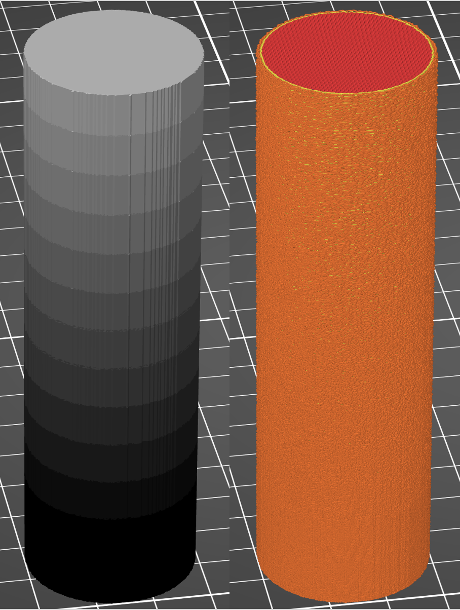
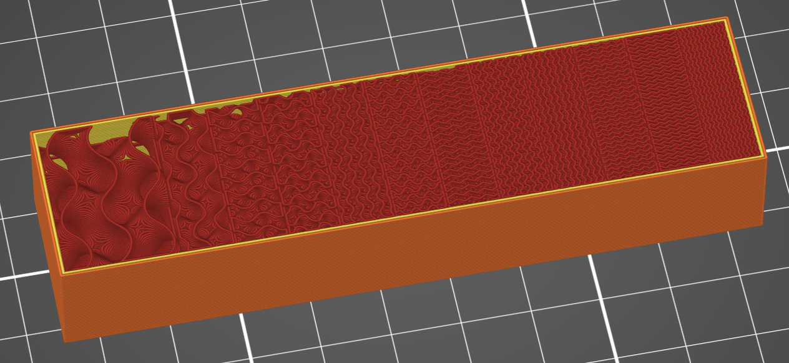
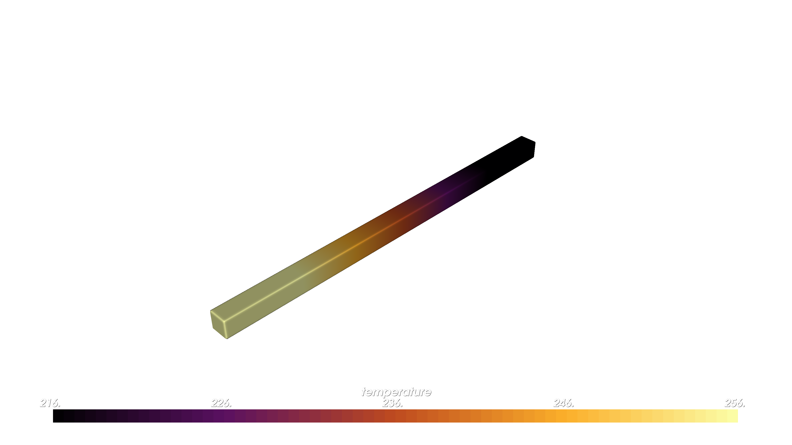
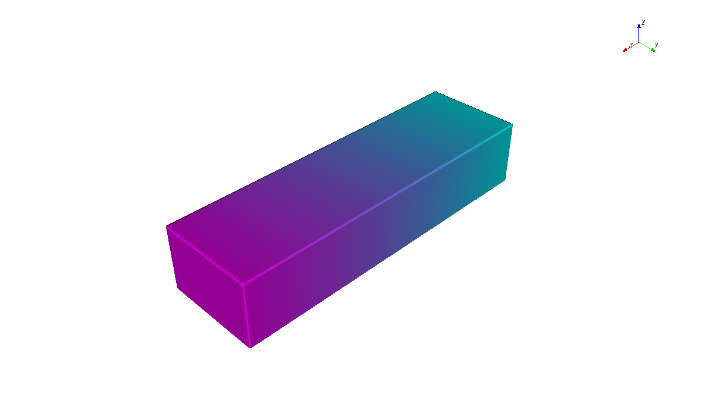
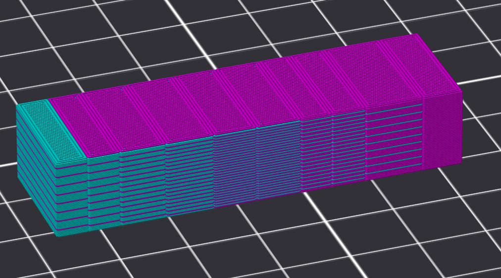
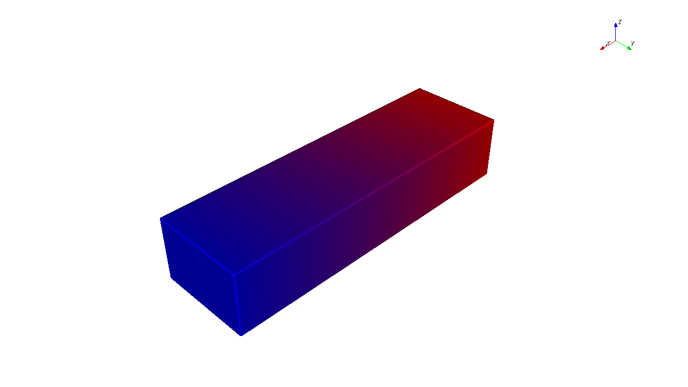
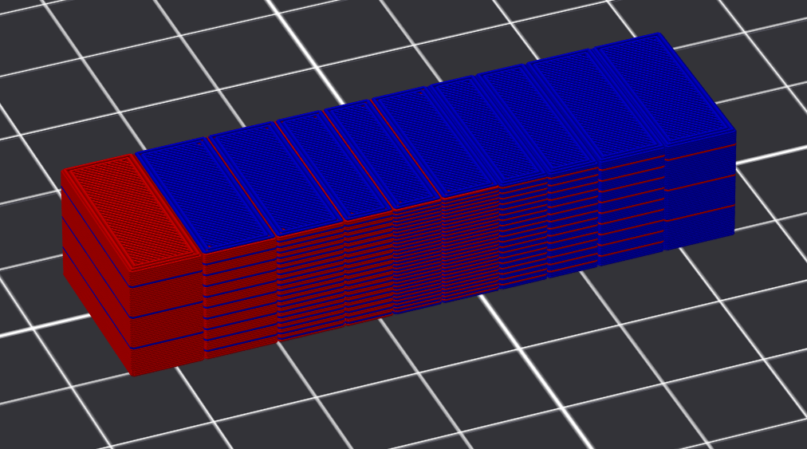

Slicer Project Compilers#
Intro#
Slicer project compilers turn prepared OpenVCAD designs into slicer-native .3mf project files for filament printing workflows. Use them when you want OpenVCAD to generate geometry regions and attribute-derived assignments, while the downstream slicer still owns slicing, preview, and G-code generation.
There are two separate workflows:
Workflow |
Input attributes |
Output project |
Best fit |
|---|---|---|---|
PrusaSlicer settings meshes |
Scalar planning attributes such as |
PrusaSlicer-style |
Spatially varying slicer planning settings |
PrusaSlicer virtual extrusion |
|
PrusaSlicer-style |
Machine-state changes at region boundaries |
PrusaSlicer ColorMix color |
|
PrusaSlicer-style |
Mixed-filament color approximation from design-space colors |
PrusaSlicer ColorMix material fractions |
|
PrusaSlicer-style |
Direct material-fraction to filament-slot recipes |
FullSpectrum color |
|
Orca / Bambu-style Full Spectrum |
Mixed-filament color approximation from design-space colors |
FullSpectrum material fractions |
|
Orca / Bambu-style Full Spectrum |
Direct material-fraction to filament-slot recipes |
For slice-image workflows instead of slicer projects, see Material Inkjet, Color Inkjet, and VAT Photo.
Prerequisites#
OpenVCAD with
pyvcad,pyvcad_compilers, andpyvcad_renderinginstalled.Familiarity with attributes on geometry. See Getting Started with OpenVCAD, especially Lesson 4, and the Functional Grading Guide.
A matching slicer for the project you generate: PrusaSlicer for Prusa-style scalar projects, or the OrcaSlicer-FullSpectrum fork for the FullSpectrum examples in this guide.
PrusaSlicer#
Use the PrusaSlicer compiler when your OpenVCAD design carries scalar process attributes and you want a PrusaSlicer-compatible project file. The compiler samples scalar attributes over the solid, partitions the sampled field into a finite number of regions, emits a mesh for each region, and writes a PrusaSlicer-style .3mf.
The important idea is that a continuous OpenVCAD field becomes piecewise constant slicer regions. Each generated region gets one representative value. More regions preserve more variation, but they also create more sub-volumes for PrusaSlicer to manage.
Opening The Project#
The compiler only writes the .3mf. It does not launch PrusaSlicer.
Run your Python script so
compile()finishes and the.3mfpath exists.Open PrusaSlicer, use File -> Import, and select the generated
.3mf.Inspect sub-volumes and per-volume settings in the Plater / Models UI, then slice and review the G-code preview.
Settings Applied To Meshes#
The settings-mesh path is for attributes that directly affect slicer planning. These settings change how PrusaSlicer computes toolpaths: infill density, layer height, perimeter counts, line widths, and feature speeds. OpenVCAD emits sub-volumes, and each sub-volume carries Prusa-compatible metadata for the selected slicer setting.
This path is appropriate when the parameter should influence slicing decisions before G-code is generated. For example, an INFILL_DENSITY gradient changes how dense the internal infill toolpaths are in each generated region.
Settings-mesh attributes are scalar fields. The Python names below are available under pv.DefaultAttributes.
Attribute |
PrusaSlicer setting key |
Typical use |
|---|---|---|
|
|
Spatial infill percentage |
|
|
Distance between fuzzy skin points; lower values create denser texture |
|
|
Maximum perpendicular displacement of fuzzy skin points |
|
|
Bridge planning speed |
|
|
Outer wall line width |
|
|
Outer wall speed |
|
|
General line width |
|
|
Gap fill speed |
|
|
Infill line width |
|
|
Infill speed |
|
|
Ironing flow |
|
|
Ironing speed |
|
|
Region layer height |
|
|
Perimeter line width |
|
|
Perimeter speed |
|
|
Perimeter count |
|
|
Small-feature perimeter speed |
|
|
Solid infill line width |
|
|
Solid infill speed |
|
|
Support extrusion width |
|
|
Top infill line width |
|
|
Top solid infill speed |
Fuzzy skin cylinder (01_fuzzy_skin_cylinder.py): this example applies FUZZY_SKIN_POINT_DISTANCE along the cylinder height and writes output/fuzzy_skin_cylinder.3mf. The generated sub-volumes carry fuzzy_skin_point_dist overrides, so PrusaSlicer changes the planned surface texture by region.
Fuzzy skin must still be enabled in PrusaSlicer, typically as Outside walls.
FUZZY_SKIN_THICKNESS controls the maximum displacement from the perimeter,
while lower FUZZY_SKIN_POINT_DISTANCE values place displaced points more
densely. A thickness of zero produces a smooth region.
cylinder.set_attribute(
pv.DefaultAttributes.FUZZY_SKIN_POINT_DISTANCE,
pv.FloatAttribute(fuzzy_expr),
)
compiler = pvc.PrusaSlicerProjectCompiler(
root,
pv.Vec3(0.25, 0.25, 0.25),
out_3mf,
num_regions=12,
)
OpenVCAD (fuzzy skin distance)

PrusaSlicer preview (model and fuzzy skin G-code texture)

Models / sub-volumes (fuzzy skin overrides)

Infill density bar (02_infill_density_bar.py): this example ramps INFILL_DENSITY along the bar and writes output/infill_density_bar.3mf. The generated regions carry fill_density metadata, so PrusaSlicer computes denser or sparser infill toolpaths in each region.
bar.set_attribute(
pv.DefaultAttributes.INFILL_DENSITY,
pv.FloatAttribute(infill_expr),
)
compiler = pvc.PrusaSlicerProjectCompiler(
root,
pv.Vec3(0.25, 0.25, 0.25),
out_3mf,
num_regions=12,
)
OpenVCAD (infill density)

PrusaSlicer G-code preview (infill gradient cutaway)

Virtual Extrusion#
Virtual extrusion controls machine state by taking advantage of slicer toolchange events. OpenVCAD assigns synthetic extruder indices to regions, patches the project profile to declare those logical tools, and provides toolchange G-code that applies the desired process commands when the slicer switches between regions.
The logical toolhead does not need to correspond to a separate physical nozzle. On a single-tool printer, the slicer can still emit toolchange events between logical tools, and the toolchange script can update temperature, flow, or other machine state without changing filament. On a multi-tool printer, the same concept can coexist with physical tool changes if the printer profile and script are written that way.
This path is intentionally different from settings meshes:
Path |
Controls |
Slicer sees it before planning? |
Best fit |
|---|---|---|---|
Settings mesh |
Toolpath planning settings |
Yes |
Infill, speeds, widths, layer height, perimeters |
Virtual extrusion |
Machine state commands |
No, it runs as G-code |
Temperature, flow, and process state that can be changed at region boundaries |
In the current method, TEMPERATURE is the primary virtual-extrusion attribute and FLOW_RATE is its companion.
Attribute |
Role |
Effect |
|---|---|---|
|
Primary region attribute |
Creates logical tools and emits |
|
Companion attribute |
Supplies |
The toolchange script applies commands such as:
M104 S{temperature}
M221 S{flow_rate}
Temperature and flow example (03_temperature_compensation_demo.py): this example applies a TEMPERATURE field, derives FLOW_RATE from a lookup table, and writes output/temperature_compensation_demo.3mf. The compiler uses Prusa profile files from examples/applications/foaming_filaments/profiles/ so the generated project can define logical tools and toolchange G-code.
rect_prism.set_attribute(
pv.DefaultAttributes.TEMPERATURE,
pv.FloatAttribute("max(min((x/3+236),256),216)"),
)
compiler = pvc.PrusaSlicerProjectCompiler(
root,
pv.Vec3(0.25, 0.25, 0.25),
out_3mf,
num_regions=10,
printer_profile_path=printer_profile_path,
filament_profile_path=filament_profile_path,
)
OpenVCAD (temperature)

PrusaSlicer G-code preview (temperature)

ColorMix#
PrusaSlicer ColorMix uses Prusa’s FullSpectrum project metadata and Prusa_Slicer_full_spectrum.json to define virtual extruders whose IDs start after the physical filament slots. OpenVCAD assigns generated color/material regions to those physical or virtual extruder IDs in the normal Prusa Slic3r_PE_model.config metadata.
ColorMix mode is mutually exclusive with the scalar settings-mesh and virtual-extrusion paths. It is selected automatically when the design contains COLOR_RGB or VOLUME_FRACTIONS, or explicitly with enable_color_mix=True.
For COLOR_RGB, OpenVCAD uses a device-aware recipe selector. It generates valid Prusa ColorMix recipes from the configured physical filaments, predicts each recipe’s apparent color with Prusa’s mixer model, and then selects up to max_palette_size printable recipes that best cover the sampled design colors. max_palette_size counts both direct physical filament colors and virtual mixed recipes. The generated 3MF also includes Metadata/OpenVCAD_prusa_colormix_report.json, which records the selected recipes and DeltaE fit summary for inspection.
Color gradient example (06_prusa_colormix_color_gradient.py): this example applies a COLOR_RGB ramp and writes output/prusa_colormix_color_gradient.3mf.
bar.set_attribute(
pv.DefaultAttributes.COLOR_RGB,
pv.Vec3Attribute(red_expr, green_expr, blue_expr),
)
compiler = pvc.PrusaSlicerProjectCompiler(
root,
pv.Vec3(0.25, 0.25, 0.25),
out_3mf,
enable_color_mix=True,
color_mix_recipe_preset="expanded",
max_palette_size=10,
min_component_percent=15,
max_recipe_components=3,
region_overlap_mm=0.2,
)
Volume-fraction example (07_prusa_colormix_volume_fractions.py): this example maps OpenVCAD materials directly to physical filament slots and writes output/prusa_colormix_volume_fractions.3mf.
compiler = pvc.PrusaSlicerProjectCompiler(
root,
pv.Vec3(0.25, 0.25, 0.25),
out_3mf,
enable_color_mix=True,
total_physical_extruders=5,
color_mix_filaments=[
{"slot": 1, "color_hex": "#FF0000"},
{"slot": 2, "color_hex": "#0000FF"},
],
volume_fraction_materials={"red": 1, "blue": 2},
max_palette_size=10,
min_component_percent=1,
max_recipe_components=3,
region_overlap_mm=0.0,
)
Prusa Constructor Options#
compiler = pvc.PrusaSlicerProjectCompiler(
root,
pv.Vec3(0.25, 0.25, 0.25),
out_3mf,
num_regions=12,
printer_profile_path=printer_profile_path,
filament_profile_path=filament_profile_path,
enable_color_mix=False,
color_mix_filaments=None,
total_physical_extruders=5,
color_mix_recipe_preset="expanded",
max_palette_size=32,
min_component_percent=15,
max_recipe_components=3,
direct_physical_delta_e=1.0,
region_overlap_mm=0.2,
volume_fraction_materials={},
material_defs_path="",
)
compiler.compile()
Option |
Meaning |
|---|---|
|
The OpenVCAD design tree to compile. |
|
Sampling spacing in mm. Smaller values resolve smaller regions but cost more time and memory. |
|
Destination |
|
Number of value bands for each scalar attribute. More regions preserve more variation but create more sub-volumes. |
|
PrusaSlicer printer |
|
PrusaSlicer filament |
|
Explicitly enables Prusa ColorMix mode. |
|
Physical filament slots and colors for ColorMix. Each dictionary may include |
|
Total physical tool slots in PrusaSlicer. Virtual ColorMix extruders start after this count, so unused physical tool IDs can be skipped. Defaults to |
|
Recipe vocabulary for Prusa |
|
Maximum generated ColorMix palette size or volume-fraction recipe-region count. For Prusa |
|
Minimum component percentage kept in generated ColorMix recipes. |
|
Maximum physical filaments allowed in one Prusa ColorMix recipe. Prusa ColorMix supports up to 3. |
|
Legacy setting retained for compatibility. Prusa |
|
Small overlap between generated ColorMix sub-parts to avoid visible cracks between separately meshed regions. |
|
Material-name to physical-slot mapping for direct |
|
Optional |
FullSpectrum#
Use the FullSpectrum compiler when your OpenVCAD design carries either COLOR_RGB or VOLUME_FRACTIONS and you want an Orca / Bambu-style project for the FullSpectrum workflow.
Full Spectrum is a slicer workflow for getting more apparent colors out of a limited set of loaded filaments. Instead of truly melting filaments together into a homogeneous mixed polymer, it creates virtual mixed-color filaments by alternating physical filaments through layer dithering or related patterns. Thin layers and partially translucent filament let light interact with multiple colors, so the eye sees an intermediate color.
The achievable colors depend strongly on the actual filaments loaded in the printer, their translucency, layer height, surface orientation, and slicer settings. A CMYKW physical set, cyan, magenta, yellow, black, and white, is the recommended starting point because it gives the color-matching algorithm a broad gamut to work with.
OpenVCAD targets the OrcaSlicer-FullSpectrum community fork for this project format. Treat this as an emerging ecosystem: the generated projects use Orca / Bambu-style metadata and FullSpectrum mixed-filament settings, and stock PrusaSlicer, stock OrcaSlicer, or stock Bambu Studio may not interpret those settings correctly.
COLOR_RGB Workflow#
Use COLOR_RGB when the design field is an intended color. The compiler samples the RGB target field, reduces it to a bounded palette with max_palette_size, compares each palette color against the loaded physical filaments and possible mixed-filament recipes, and assigns each generated mesh region to a physical or virtual mixed filament.
The default physical palette for COLOR_RGB mode is CYMKW if you do not pass filaments. Pass explicit filament dictionaries when your loaded spool colors differ.
compiler = pvc.FullSpectrumSlicerProjectCompiler(
root,
pv.Vec3(0.25, 0.25, 0.25),
out_3mf,
[
{"slot": 1, "color_hex": "#00FFFF"},
{"slot": 2, "color_hex": "#FF00FF"},
{"slot": 3, "color_hex": "#FFFF00"},
{"slot": 4, "color_hex": "#000000"},
{"slot": 5, "color_hex": "#FFFFFF"},
],
max_palette_size=32,
min_component_percent=15,
max_recipe_components=5,
)
Color gradient example (04_full_spectrum_color_gradient.py): this example applies a COLOR_RGB ramp from cyan toward magenta and writes output/full_spectrum_color_gradient.3mf. The compiler samples the RGB target field, reduces it to a small palette, and assigns each palette color to a physical or virtual mixed filament recipe.
bar.set_attribute(
pv.DefaultAttributes.COLOR_RGB,
pv.Vec3Attribute(red_expr, green_expr, blue_expr),
)
compiler = pvc.FullSpectrumSlicerProjectCompiler(
root,
pv.Vec3(0.25, 0.25, 0.25),
out_3mf,
max_palette_size=10,
min_component_percent=15,
max_recipe_components=5,
)
OpenVCAD (COLOR_RGB target)

OrcaSlicer-FullSpectrum g-code screenshot

VOLUME_FRACTIONS Workflow#
Use VOLUME_FRACTIONS when the OpenVCAD field already describes material proportions and you want those proportions to become FullSpectrum recipe weights. This is simpler than color matching because the design says which materials should participate.
The compiler maps OpenVCAD material names to physical filament slots with volume_fraction_materials, normalizes the mapped fractions for each sample, clusters fraction vectors into at most max_palette_size recipe regions, and emits physical or virtual mixed-filament recipes using representative weights for each region.
compiler = pvc.FullSpectrumSlicerProjectCompiler(
root,
pv.Vec3(0.25, 0.25, 0.25),
out_3mf,
volume_fraction_materials={"red": 1, "blue": 2},
max_palette_size=10,
min_component_percent=1,
max_recipe_components=5,
)
Volume-fraction example (05_full_spectrum_volume_fractions.py): this example ramps red and blue material fractions across the bar and writes output/full_spectrum_volume_fractions.3mf. The volume_fraction_materials={"red": 1, "blue": 2} mapping sends those OpenVCAD material names directly to physical filament slots.
bar.set_attribute(
pv.DefaultAttributes.VOLUME_FRACTIONS,
pv.VolumeFractionsAttribute(
[
(red_fraction_expr, materials.id("red")),
(blue_fraction_expr, materials.id("blue")),
]
),
)
compiler = pvc.FullSpectrumSlicerProjectCompiler(
root,
pv.Vec3(0.25, 0.25, 0.25),
out_3mf,
volume_fraction_materials={"red": 1, "blue": 2},
max_palette_size=10,
min_component_percent=1,
max_recipe_components=5,
)
OpenVCAD (VOLUME_FRACTIONS target)

OrcaSlicer-FullSpectrum g-code screenshot

FullSpectrum Constructor Options#
compiler = pvc.FullSpectrumSlicerProjectCompiler(
root,
voxel_size,
output_file_path,
filaments=None,
max_palette_size=32,
min_component_percent=15,
max_recipe_components=5,
direct_physical_delta_e=1.0,
region_overlap_mm=0.2,
base_project_settings_path="",
orca_machine_profile_path="",
orca_process_profile_path="",
orca_default_filament_profile_path="",
orca_profile_search_paths=[],
volume_fraction_materials={},
material_defs_path="",
)
Option |
Meaning |
|---|---|
|
Physical filament slots and colors. Each dictionary may include |
|
Maximum generated |
|
Minimum component percentage kept in generated mixed recipes. Tiny components are dropped and the remaining weights are normalized. |
|
Maximum physical filaments allowed in one mixed recipe. |
|
DeltaE threshold for assigning a |
|
Small overlap between generated FullSpectrum sub-parts to avoid visible cracks between separately meshed regions. |
|
Optional Orca project settings JSON to merge before compiler-controlled FullSpectrum keys are written. |
|
Optional Orca machine profile path or resolvable profile name. |
|
Optional Orca process profile path or resolvable profile name. |
|
Optional default filament profile path or resolvable profile name. |
|
Additional directories searched for Orca JSON profiles. |
|
Material-name to physical-slot mapping for direct |
|
Optional |
FullSpectrum Limitations#
FullSpectrum is not true molten filament mixing. It is an optical and geometric approximation based on alternating physical filaments.
The reachable color gamut depends on the loaded filaments, translucency, layer height, top/bottom shell behavior, and surface orientation.
OpenVCAD emits a finite number of mesh regions. More regions can preserve more variation, but they also increase project complexity.
Sloped surfaces, small details, top layers, and short regions can show different color behavior than tall vertical walls.
Stock slicers may ignore or reject FullSpectrum metadata. Use the documented FullSpectrum fork unless you have verified another slicer version.
max_recipe_componentsandmin_component_percentintentionally bound recipe complexity. Some requested colors or material blends cannot be represented within those limits.